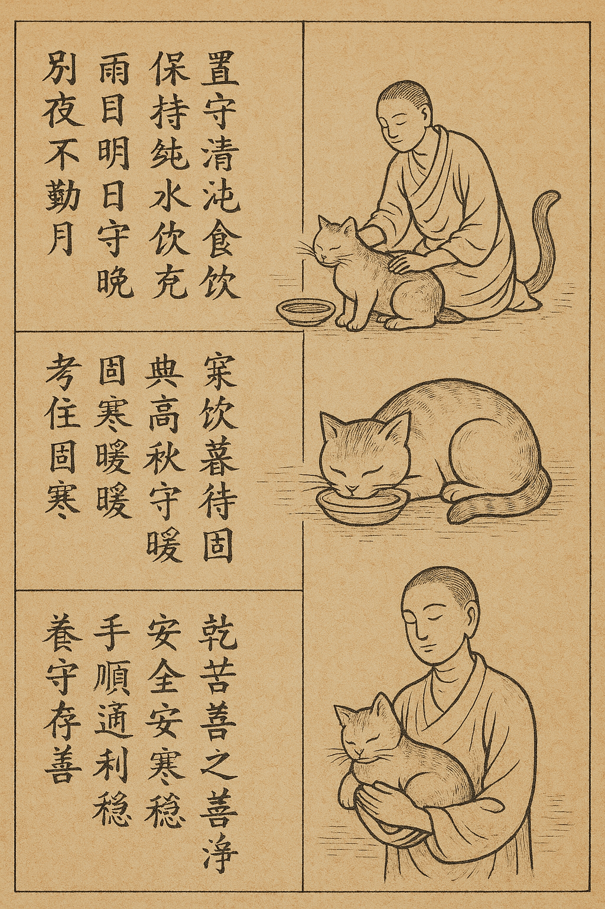
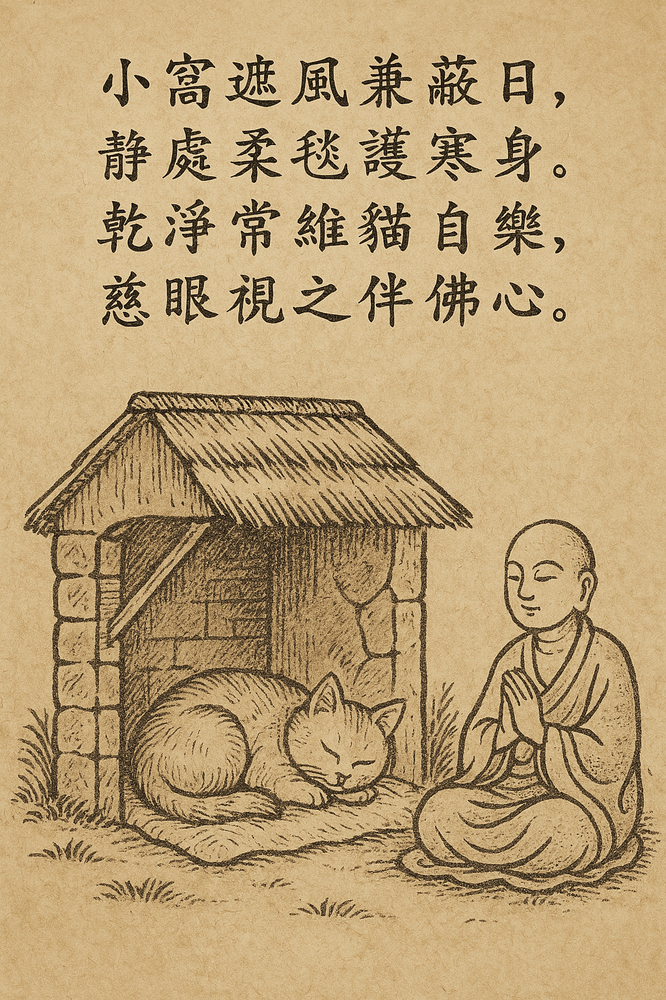
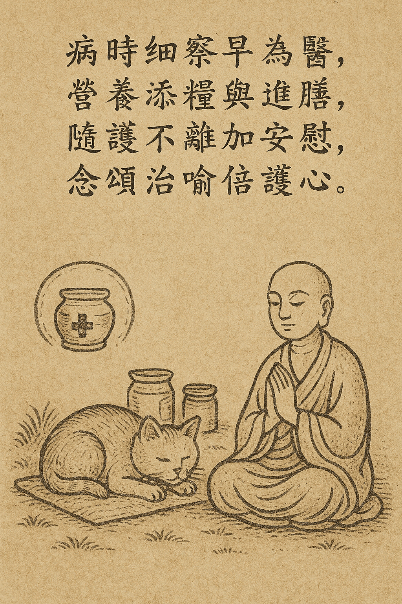
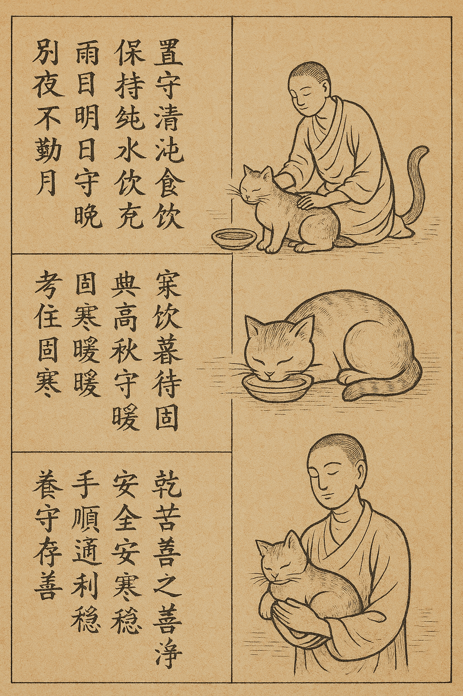
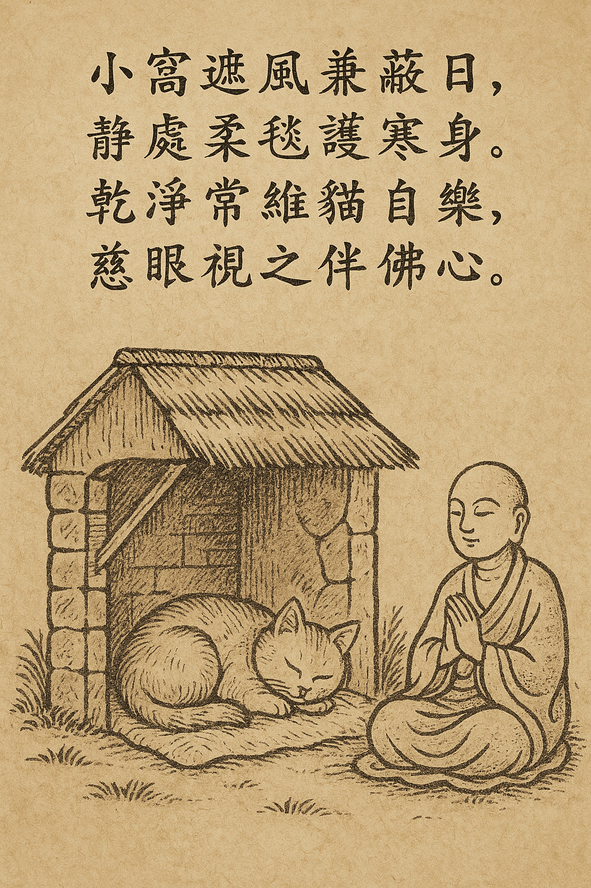
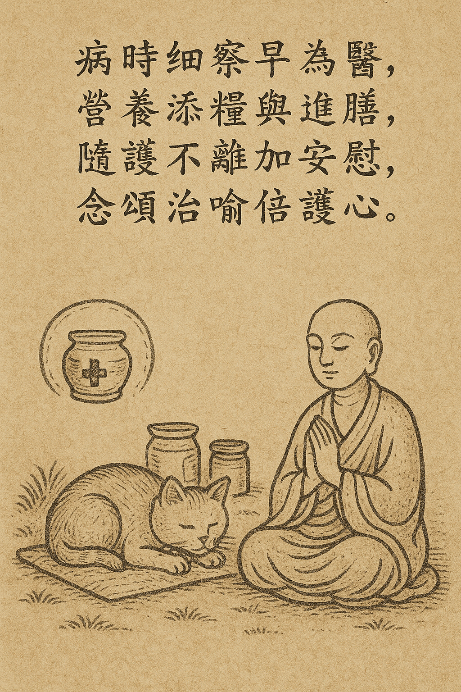

貓之養育偈
一、施食篇
晨起布施貓前緣，飢者得食喜自然。 柔語招喚心不亂，福田種下報無邊。
二、安處篇
小窩遮風兼蔽日，靜處柔毯護寒身。 乾淨常維貓自樂，慈眼視之伴佛心。
三、護病篇
見病莫懼速就醫，觀其舉止辨虛實。 藥餵細心語安撫，憐憫之德福所積。
四、伴行篇
時伴貓行不拘束，自由隨性是牠經。 共處無言情最真，慈悲雙修得無生。

晨起布施貓前緣，飢者得食喜自然。 柔語招喚心不亂，福田種下報無邊。
小窩遮風兼蔽日，靜處柔毯護寒身。 乾淨常維貓自樂，慈眼視之伴佛心。
見病莫懼速就醫，觀其舉止辨虛實。 藥餵細心語安撫，憐憫之德福所積。
時伴貓行不拘束，自由隨性是牠經。 共處無言情最真，慈悲雙修得無生。